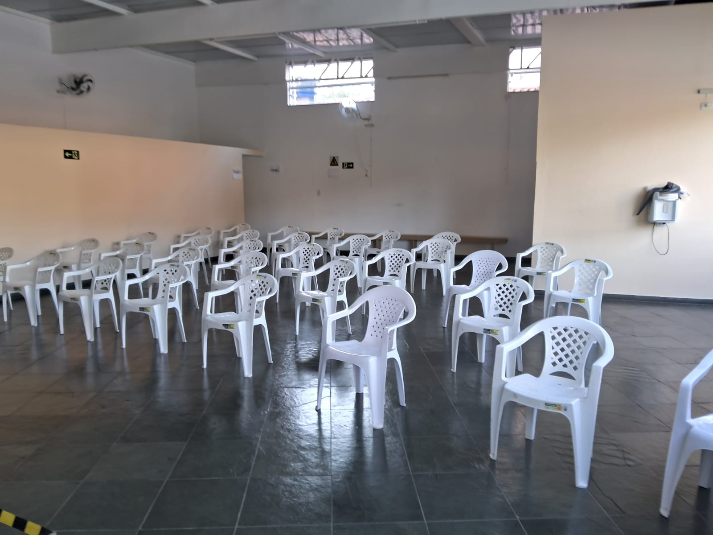
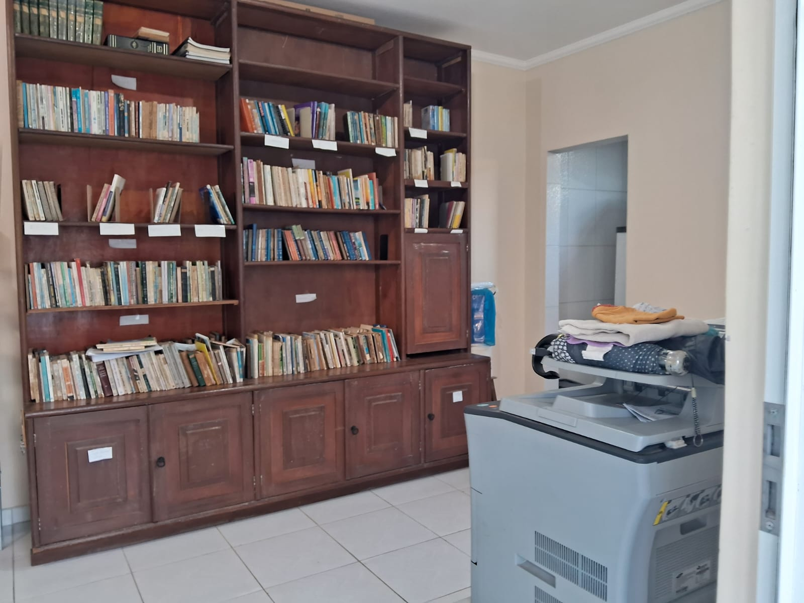
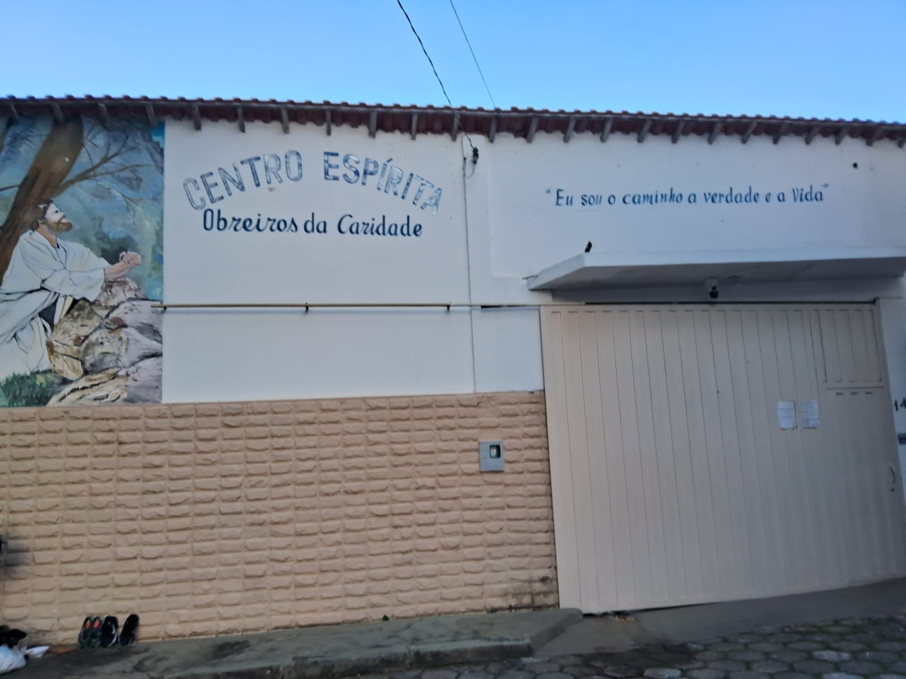

Sobre o Centro Espírita em São Lourenço
O Centro Espírita Obreiros da Caridade, em São Lourenço - MG, no Sul de Minas, é um espaço dedicado ao estudo e à prática da Doutrina Espírita codificada por Allan Kardec.
Foi fundado em 5 de setembro de 1996 e, desde então, busca seguir e divulgar os princípios da Doutrina Espírita, sempre à luz do Evangelho de Jesus Cristo.
O Centro está aberto a todos que tenham interesse em conhecer um pouco mais sobre a doutrina.
Atividades e Horários
- Palestras abertas ao público: Segunda-feira e Quarta-feira às 20:00
- Estudos doutrinários: Sábado a partir das 15:00 às 16:00
- Tratamento espiritual para enfermidades: Sábado a partir das 16:00




Localização
Estamos localizados na Rua Comendador Oscar Fagundes, 140, São Lourenço - Minas Gerais
Clique no mapa abaixo para mais informações: ⬇️⬇️